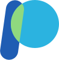

Найдите решение для клиента за секунды, а не за вечер поисков
AI-экосистема для психологов и помогающих профессий: проверенная база знаний от экспертов, умный поиск и удобная CRM с видеовстречами в одном месте.
Демо-доступ на 21 день: 500 токенов и все функции платформы.


Praxis · Поиск по базе знанийПример интерфейса, иллюстрация
Работа специалиста помогающей профессии — это ещё и бесконечный поиск и рутина
Не знаете, как помочь в сложном случае
История клиента нетипична, а опыта именно в этой теме не хватает. Найти проверенный подход приходится самому.
Информация есть, но найти её невозможно
Статьи, курсы, записи, чаты разбросаны по разным местам. Качество источников непонятно, на проверку уходят часы.
Записи живут в десяти местах
Блокноты, мессенджеры, таблицы, отдельные видеосервисы. Нет единой картины по клиенту и его прогрессу.
Знания эксперта не приносят дохода
В России нет единой платформы, где авторские материалы монетизируются регулярно, а не разовой продажей курса.
Praxis объединяет знания, AI и рабочий кабинет специалиста
Одна платформа вместо россыпи инструментов: находите решение, применяете его и фиксируете результат, не переключаясь между сервисами.
База знаний с модерацией
Материалы загружают эксперты, каждый проходит ручную проверку по стандартам качества: видео, аудио, тексты, изображения.
AI-поиск решений
Опишите ситуацию: AI находит подходящие материалы за секунды и подсказывает, с чего начать работу с клиентом.
CRM для психолога
Карточки клиентов, сессии, видеовстречи, аудиозаметки и избранное в одном месте и рядом с материалами.
Зачем платить за четыре сервиса, если всё нужное — в одном
Обычно специалисту приходится сочетать агрегатор клиентов, CRM, отдельные базы знаний и общие AI-чаты. Praxis собирает это в одну подписку без комиссии с ваших сессий.
| Что важно в работе | Praxis | Агрегаторы консультаций | Простые CRM для психологов | Общие AI-чаты |
|---|---|---|---|---|
| База знаний с ручной модерацией | да | нет | нет | без проверки источников |
| AI-поиск решений под клиентский случай | да | нет | нет | общий, без профессиональной базы |
| CRM, видеовстречи и заметки в одном кабинете | да | частично | да | нет |
| Заработок экспертов на своих материалах | да | нет | нет | нет |
| Комиссия с ваших сессий | 0%, только подписка | 30–35% | нет | нет |
Меньше времени на поиск
Не нужно искать и проверять источники вручную: AI подбирает материалы под ваш случай из проверенной базы.
Одна подписка вместо набора сервисов
Знания, AI, CRM, видеовстречи и заметки не нужно оплачивать и настраивать по отдельности.
Доход остаётся у вас
Praxis не берёт процент с ваших консультаций. Вы платите за инструмент, а не за каждого клиента.
Сравнение по типам сервисов на российском рынке на основе открытых данных. Условия конкретных сервисов могут отличаться. Расчёт иллюстративный.
Всё, что нужно для практики, в первой версии платформы
Поиск по базе
Быстрый доступ к релевантным материалам под конкретный клиентский случай.
Карточки клиентов
История работы, заметки и прогресс клиента в одном профиле.
Видеовстречи
Проводите сессии прямо на платформе и сразу фиксируйте итоги.
Аудиозаметки
Наговорите заметку после сессии и не тратьте вечер на конспекты.
Избранное
Сохраняйте нужные материалы в простые папки и возвращайтесь к ним в один клик.
Режим сессии
Материалы и заметки под рукой во время приёма, без лишних переключений.
Личный кабинет
Профиль специалиста, подписка и история использования платформы.
Человек + AI
AI помогает искать и систематизировать, решения остаются за специалистом.
Превратите свои знания в постоянный доход
Загружайте материалы в личном кабинете и получайте вознаграждение каждый раз, когда коллеги используют их в работе. Условия вознаграждения объясним при подключении.
- Вознаграждение за каждое использование ваших материалов коллегами
- Чем больше качественного контента, тем выше регулярный доход
- Любые форматы: видео, аудио, тексты, изображения
- После модерации материал попадает в поиск и AI-ответы
Прозрачная подписка: выберите свой объём работы
Начните с бесплатного демо-доступа и переходите на подписку, когда будете готовы работать на платформе постоянно.
Демо-доступ
- 500 токенов
- 30 AI-запросов
- 10 скачиваний материалов
- Все функции платформы
Базовый
- 3 000 токенов в месяц
- 100 AI-запросов в месяц
- 30 скачиваний материалов в месяц
- CRM, видеовстречи, аудиозаметки
Профессиональный
- 5 000 токенов + 1 000 бонусных
- 300 AI-запросов в месяц
- 60 скачиваний материалов в месяц
- CRM, видеовстречи, аудиозаметки
Бесплатно предоставляется только демо-доступ на 21 день. Неиспользованные токены тарифа сгорают в конце периода. Дополнительные токены: 1 000 ₽ = 1 000 токенов, действуют 6 месяцев.
Качество материалов — главный принцип платформы
Высокие барьеры для контента плюс ручная модерация дают то, чего не хватает открытому интернету: уверенность в источнике.
Частые вопросы
Для кого платформа?
Для психологов, специалистов в сфере здравоохранения и помогающих профессий: тех, кто работает с клиентами и хочет быстрее находить решения и вести практику в одном месте.
Можно ли попробовать бесплатно?
Да. Демо-доступ бесплатный на 21 день: 500 токенов, 30 AI-запросов, 10 скачиваний и все функции платформы. Тарифы «Базовый» (3 000 ₽ в месяц) и «Профессиональный» (5 000 ₽ в месяц) оформляются по подписке без бесплатного периода.
Кто создаёт материалы и кто их проверяет?
Материалы загружают эксперты по установленным стандартам. Каждый из них вручную проверяют модераторы — психологи с более чем 20-летним стажем практики, и только после этого материал попадает в поиск и AI-ответы.
Что такое токены и на что они тратятся?
Токены — внутренняя единица платформы. Просмотр видео стоит 100 токенов, скачивание текста или изображения — 50. Оплаченное видео остаётся доступным, пока активна подписка, а скачанные материалы остаются у вас. Видео скачать нельзя, только смотреть на платформе. Неиспользованные токены тарифа сгорают в конце периода. Дополнительные токены (1 000 ₽ = 1 000 токенов) действуют 6 месяцев.
Заменяет ли AI специалиста?
Нет. AI ускоряет поиск и систематизацию, а профессиональные решения остаются за вами.
Как зарабатывают эксперты?
Эксперт получает вознаграждение за использование своих материалов пользователями платформы. Чем больше качественного контента, тем выше регулярный доход. Условия уточняются при подключении.
Когда запуск?
Первая версия платформы готовится к запуску. Оставьте контакт, и мы напишем вам, когда откроем ранний доступ.
Ранний доступ
Присоединяйтесь к экосистеме, которая меняет правила игры
Напишите нам, и мы добавим вас в список раннего доступа и сообщим о запуске. Начните с бесплатного демо-доступа.
+7 916 181-41-82Щербаков Алексей